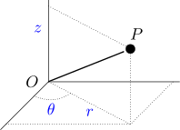

ME7820 - Cinemática e Dinâmica

Primeiros passos
- Navegue pelas páginas utilizando as setas de controle à direita.
- Acesse diretamente os tópico através do menu à esquerda (☰).
- Os diferentes tópicos estão distribuídos na horizontal.
- O conteúdo de cada tópico está na vertical.
- Utilize o navegador Chrome.
- Acesse: CinDin Printable.
- Abra as opções de impressão (Ctrl + P)
- Escolha o destino Salvar como PDF.
- Escolha Layout como Paisagem.
- Escolha Margem como Nenhum.
- Marque a opção Gráficos de segundo plano.
- Clique em Imprimir.
Introdução ao curso
|
Modal |
Milhões [TKU] |
Participação [%] |
|---|---|---|
|
Rodoviário |
485.625 |
61,1 |
|
Ferroviário |
164.809 |
20,7 |
|
Aquaviário |
108.000 |
13,6 |
|
Dutoviário |
33.300 |
4,2 |
|
Aéreo |
3.169 |
0,4 |
|
Total |
794.903 |
100,0 |
CNT: Movimentação anual da matriz de transporte de carga no Brasil em 2016.

MCTI: Emissões de CO 2 no Brasil em 2010.

Liang, 2016: Campo de pressão no plano de simetria de um comboio de dois caminhões para diferentes distâncias de separação.

Huang, 2018: Fluxograma para otimização do perfil de velocidade.


Cinemática do ponto
Movimento retilíneo
Posição
\(x(t) = 6 t^2 - t^3\)
Velocidade
\[\scriptsize \bar{v} = \frac{\Delta x}{\Delta t}\]
Velocidade média
\[\scriptsize v(t) = \lim_{\Delta t \to 0} \frac{\Delta x}{\Delta t} = \frac{dx}{dt} \]
Velocidade instantânea
Aceleração

\[\scriptsize \bar{a} = \frac{\Delta v}{\Delta t}\]
Aceleração média
\[\scriptsize a(t) = \lim_{\Delta t \to 0} \frac{\Delta v}{\Delta t} = \frac{dv}{dt} \]
Aceleração instantânea
\[\scriptsize x(t) = 6 t^2 - t^3\]

\[\scriptsize \bar{v} = \tan \beta = \frac{\Delta x}{\Delta t}\]
\[\scriptsize v(t) = \lim_{\Delta t \to 0} \frac{\Delta x}{\Delta t} = \tan \theta\]
\[\scriptsize x(t) = 6 t^2 - t^3 \rightarrow v(t) = 12 t - 3 t^2\]
\[\scriptsize a(t) = \lim_{\Delta t \to 0} \frac{\Delta v}{\Delta t} = \tan \alpha \]
\(\scriptsize x(t_f) - x(t_i) = \int^{t_f}_{t_i} v dt = A\)
\[\frac{dx}{dt} = v\]
\[dx = v \, dt\]
\[\int^{t_f}_{t_i} dx = \int^{t_f}_{t_i} v \, dt\]
\[x(t_f) - x(t_i) = \int^{t_f}_{t_i} v \, dt = A\]
\[\scriptsize x(t) = 6 t^2 - t^3 \rightarrow v = 12 t - 3 t^2 \rightarrow a = 12 - 6 t\]

\[\scriptsize \frac{dv}{dt} = a\]
\[\scriptsize dv = a \, dt\]
\[\scriptsize \int^{t_f}_{t_i} dv = \int^{t_f}_{t_i} a \, dt\]
\[\tiny v(t_f) - v(t_i) = \int^{t_f}_{t_i} a \, dt = A_1 - A_2\]
Exemplo
Um automóvel inicia frenagem a partir de uma velocidade inicial de 72 km/h com aceleração dada por \(a(t) = -2 + 0{,}04 t \) [m/s2].
Determine o tempo de frenagem até que o veículo fique em repouso.
Exercício
Partindo das equações \(v = dx/dt\) e \(a = dv/dt\), deduza as expressões abaixo para o movimento retilíneo uniformemente variado
- \(x=x_{0}+v_{0} t+\frac{1}{2} a t^{2}\)
- \(v^{2}=v_{0}^{2}+2 a\left(x-x_{0}\right)\)
Cinemática do ponto
Movimento geral
Sistemas de coordenadas
Sistema de coordenadas é o conjunto de coordenadas utilizadas para descrever a cinemática de um ponto ou conjunto de pontos.


Coordenadas cilíndricas
Coordenadas cartesianas
Base
Sistema de referência é a base, geralmente ortonormal, utilizada para descrever as quantidades vetoriais da cinemática em relação ao referencial.

Referencial
Referencial é qualquer corpo em relação ao qual se estuda o problema e se determinam as caracterı́sticas cinemáticas (posição, velocidade e aceleração).

Base fixa

- Coordenadas cartesianas
\((x, \, y, \, z)\) - Base fixa
\(\{O \, \vec{i} \, \vec{j} \, \vec{k}\}\)
Vetor posição:
\(\vec{r} = (P - O) = x \vec{i} + y \vec{j} + z \vec{k}\)
Base fixa - Cinemática
Vetor posição:
\(\vec{r} = (P - O) = x \vec{i} + y \vec{j} + z \vec{k}\)
Vetor velocidade:
\( \vec{v} = \frac{d\vec{r}}{dt}= \dot{x} \vec{i} + x \dot{\vec{i}} + \dot{y} \vec{j} + y \dot{\vec{j}} + \dot{z} \vec{k} + z \dot{\vec{k}} \)
\(\vec{v} = \dot{x} \vec{i} + \dot{y} \vec{j} + \dot{z} \vec{k}\)
Vetor aceleração:
\(\vec{a} = \frac{ d\vec{v}}{dt} = \ddot{x} \vec{i} + \ddot{y} \vec{j} + \ddot{z} \vec{k}\)
Base fixa - Vetor tangente

\[\vec{v} = \lim_{\Delta t \to 0} \frac{\Delta \vec{r}}{\Delta t}\]
\[\vec{v} = \lim_{\Delta t \to 0} \frac{\vec{r}(t + \Delta t) - \vec{r}(t)}{\Delta t}\]
\[\vec{v} = \frac{d \vec{r}}{dt} = \dot{\vec{r}}\]
\[\vec{v} = \lim_{\Delta t \to 0} \frac{\Delta \vec{r}}{\Delta t} = \lim_{\Delta t \to 0} \frac{\|\Delta \vec{r}\|}{\Delta t}\frac{\Delta \vec{r}}{\|\Delta \vec{r}\|} = \lim_{\Delta t \to 0} \frac{\Delta s}{\Delta t}\frac{\Delta \vec{r}}{\|\Delta \vec{r}\|} = \frac{ds}{dt} \vec{t}\]
\[ \vec{v} = \dot{s} \vec{t}\]
Vetor velocidade é sempre tangente à trajetória
\[ \vec{a} = \frac{d \vec{v}}{dt} = \ddot{s} \vec{t} + \dot{s} \dot{\vec{t}}\]
Base móvel

- Coordenadas cilíndricas
\((x, \, y, \, z)\) - Base fixa
\(\{O \, \vec{i} \, \vec{j} \, \vec{k}\}\) - Base móvel
\(\{O \, \vec{u} \, \vec{\tau} \, \vec{k}\}\)
Vetor posição:
\(\vec{r} = (P - O) = r \vec{u} + z \vec{k}\)
Base móvel - Cinemática
Vetor posição:
\(\vec{r} = (P - O) = r \vec{u} + z \vec{k}\)
Vetor velocidade:
\( \vec{v} = \frac{d\vec{r}}{dt}= \dot{r} \vec{u} + r \dot{\vec{u}} + \dot{z} \vec{k} + z \dot{\vec{k}} \)
\(= \dot{r} \vec{u} + r \dot{\vec{u}} + \dot{z} \vec{k}\)
Base móvel - Cinemática

No limite:
\(\Delta \vec{u} = \|\Delta \vec{u}\| \vec{\tau}\)
\(\|\Delta \vec{u}\| = \Delta s'\)
\(\Delta s' = \Delta \theta \, \|\vec{u}\|\)
\(\Delta \theta \, \|\vec{u}\| = \Delta \theta\)
\( \|\Delta \vec{u}\| = \Delta \theta\)
\[\frac{d \vec{u}}{dt} = \lim_{\Delta t \to 0} \frac{\vec{u} (t + \Delta t) - \vec{u}(t)}{\Delta t} = \lim_{\Delta t \to 0} \frac{\Delta \vec{u}}{\Delta t}= \lim_{\Delta t \to 0} \frac{\|\Delta \vec{u}\|}{\Delta t} \vec{\tau} = \lim_{\Delta t \to 0} \frac{\Delta \theta}{\Delta t} \vec{\tau}\]
\[\dot{\vec{u}} = \dot{\theta} \vec{\tau}\]
Base móvel - Cinemática
Vetor posição:
\(\vec{r} = (P - O) = r \vec{u} + z \vec{k}\)
Vetor velocidade:
\( \vec{v} = \frac{d\vec{r}}{dt}= \dot{r} \vec{u} + r \dot{\vec{u}} + \dot{z} \vec{k} + z \dot{\vec{k}} \)
\(= \dot{r} \vec{u} + r \dot{\vec{u}} + \dot{z} \vec{k}\)
\(\vec{v} = \dot{r} \vec{u} + r \dot{\theta} \vec{\tau}+ \dot{z} \vec{k}\)
Vetor aceleração:
\(\vec{a} = \frac{d\vec{v}}{dt} = \ddot{r} \vec{u} + \dot{r} \dot{\vec{u}} + \dot{r} \dot{\theta} \vec{\tau} + r \ddot{\theta} \vec{\tau} + r \dot{\theta} \dot{\vec{\tau}} + \ddot{z} \vec{k} + \dot{z} \dot{\vec{k}}\)
Base móvel - Cinemática
No limite:
\(\Delta \vec{\tau} = - \|\Delta \vec{\tau}\| \vec{u}\)
\(\|\Delta \vec{\tau}\| = \Delta s'\)
\(\Delta s' = \Delta \theta \, \|\vec{\tau}\|\)
\(\Delta \theta \, \|\vec{\tau}\| = \Delta \theta\)
\( \|\Delta \vec{\tau}\| = \Delta \theta\)
\[\frac{d \vec{\tau}}{dt} = \lim_{\Delta t \to 0} \frac{\vec{\tau} (t + \Delta t) - \vec{\tau}(t)}{\Delta t} = \lim_{\Delta t \to 0} \frac{\Delta \vec{\tau}}{\Delta t} = - \lim_{\Delta t \to 0} \frac{\|\Delta \vec{\tau}\|}{\Delta t} \vec{u} = - \lim_{\Delta t \to 0} \frac{\Delta \theta}{\Delta t} \vec{u}\]
\[\dot{\vec{\tau}} = - \dot{\theta} \vec{u}\]
Base móvel - Cinemática
Vetor posição:
\(\vec{r} = (P - O) = r \vec{u} + z \vec{k}\)
Vetor velocidade:
\( \vec{v} = \frac{d\vec{r}}{dt}= \dot{r} \vec{u} + r \dot{\vec{u}} + \dot{z} \vec{k} + z \dot{\vec{k}} \)
\(= \dot{r} \vec{u} + r \dot{\vec{u}} + \dot{z} \vec{k}\)
\(\vec{v} = \dot{r} \vec{u} + r \dot{\theta} \vec{\tau}+ \dot{z} \vec{k}\)
Vetor aceleração:
\(\vec{a} = \frac{d\vec{v}}{dt} = \ddot{r} \vec{u} + \dot{r} \dot{\vec{u}} + \dot{r} \dot{\theta} \vec{\tau} + r \ddot{\theta} \vec{\tau} + r \dot{\theta} \dot{\vec{\tau}} + \ddot{z} \vec{k} + \dot{z} \dot{\vec{k}}\)
\(\vec{a} = (\ddot{r} - r \dot{\theta^2}) \vec{u} + (2 \dot{r} \dot{\theta} + r \ddot{\theta}) \vec{\tau} + \ddot{z} \vec{k}\)
Componentes tangencial e normal

Velocidade:
\(\vec{v} = \frac{d \vec{r}}{dt} = \frac{ds}{dt} \vec{t} = v \vec{t}\)
Aceleração:
\(\vec{a} = \frac{d \vec{v}}{dt} = \dot{v} \vec{t} + v \dot{\vec{t}} \)
Componentes tangencial e normal

\(\dot{\vec{t}} = \frac{d \vec{t}}{dt} = \frac{d \vec{t}}{d \theta} \frac{d \theta}{dt} = \underbrace{\frac{d \vec{t}}{d \theta}}_{\vec{n}} \underbrace{\frac{d \theta}{ds}}_{\frac{1}{\rho}} \underbrace{\frac{ds}{dt}}_{v} = \frac{v}{\rho} \vec{n}\)
\(\vec{a} = \frac{d \vec{v}}{dt} = \dot{v} \vec{t} + v \dot{\vec{t}}\)
\(\vec{a} = \dot{v} \vec{t} + \frac{v^2}{\rho} \vec{n}\)
Componentes tangencial e normal
\(\|\Delta \vec{t}\| = \Delta s '= \|\vec{t}\| \Delta \theta\)
\(\|\Delta \vec{t}\| = \Delta \theta\)
\[ \frac{d \vec{t}}{d \theta} = \lim_{\Delta t \to 0} \frac{\Delta \vec{t}}{\Delta \theta} = \lim_{\Delta t \to 0} \frac{\|\Delta \vec{t}\|}{\Delta \theta} \vec{n} = \vec{n}\]
\[ \frac{d \vec{t}}{d \theta} = \vec{n}\]
\(d s = d \theta \, \rho \)
\( \frac{d \theta}{ d s} = \frac{1}{\rho}\)
Componentes tangencial e normal
Vetor velocidade tangente à trajetória
\(\vec{v} = v \vec{t}\)
Vetor aceleração. \(\dot{v}\) é a aceleração tangencial e \(\frac{v^2}{\rho}\) é a aceleração normal.
\(\vec{a} = \dot{v} \vec{t} + \frac{v^2}{\rho} \vec{n}\)
A posição do ponto \(P\) é dada por
\[(P - O) = \left( t \sin t + \cos t \right) \vec{i} + \left( -t \cos t + \sin t \right)\vec{j} + t^2 \vec{k}\]
onde \(\{O\vec{i}\vec{j}\vec{k}\} \rightarrow\) base fixa.
Determine:
- O vetor velocidade \(\vec{v}\) e o módulo do vetor velocidade \(v\).
- O deslocamento do ponto em função do tempo \(s = s(t)\) com \(s(t=0)=0\).
- Os versores tangente \(\vec{t}\) e normal \(\vec{n}\) em função dos versores da base \(\vec{i}\), \(\vec{j}\) e \(\vec{k}\) e o raio de curvatura \(\rho\) em função de \(t\).
- Acelerações normal e tangencial em função dos versores \(\vec{i}\), \(\vec{j}\) e \(\vec{k}\).
Cinemática do corpo
Movimento geral
Propriedade fundamental
Num corpo rígido, a projeção das velocidades de 2 pontos quaisquer P e Q sobre a reta que os une é a mesma.
\( \vec{v}_P (P-Q) = \vec{v}_Q (P-Q) \)

\(\vec{r} = (P - Q) \rightarrow \| \vec{r} \| = \text{cte} \)
\( \| P - Q \|^2 = \text{cte} \)
\((P-Q)(P-Q) = \text{cte}\)
\( \frac{d}{dt} \left[ (P-Q)(P-Q) \right] = 0 \)
\( (\vec{v}_P-\vec{v}_Q)(P-Q) + (P-Q)(\vec{v}_P-\vec{v}_Q) = 0 \)
\( 2 (\vec{v}_P-\vec{v}_Q)(P-Q) = 0 \)
\( (\vec{v}_P-\vec{v}_Q)(P-Q) = 0 \)
Movimento de translação
No movimento de translação puro, todos os pontos do sólido têm a mesma velocidade.
\( \vec{v}_P = \vec{v}_Q \)

\( (P - Q) = \vec{c} \)
\( (\vec{v}_P - \vec{v}_Q) = 0 \)
Rotação em torno de um eixo - Velocidade
Velocidade angular: \(\omega = \frac{d \theta}{dt} = \dot{\theta}\)
Vetor velocidade angular: \( \vec{\omega} = \dot{\theta} \vec{k}\)
\( \vec{v}_P = \vec{\omega} \wedge \vec{r} \)

\( \vec{v}_p = \frac{d \vec{r}}{dt} = \frac{d}{dt} (r \vec{u} + z \vec{k}) \)
\( \vec{v}_p = \dot{r} \vec{u} + r \dot{\vec{u}} + \dot{z} \vec{k} + z \dot{\vec{k}} \)
\( \vec{v}_p = r \dot{\vec{u}} \)
\( \vec{v}_p = r \dot{\theta} \vec{\tau} \)
\( \vec{v}_p = r \omega \, (\vec{k} \wedge \vec{u}) = \omega \vec{k} \wedge r \vec{u} \)
\( \vec{v}_p = \omega \vec{k} \wedge \left( r \vec{u} + z \vec{k} \right) \)
Rotação em torno de um eixo- Aceleração
Velocidade angular: \(\omega = \frac{d \theta}{dt} = \dot{\theta}\)
Vetor velocidade angular: \( \vec{\omega} = \dot{\theta} \vec{k}\)
\( \vec{v}_P = \vec{\omega} \wedge \vec{r} \)
\( \frac{d \vec{v}_P}{dt} = \vec{a}_P = \dot{\vec{\omega}} \wedge \vec{r} + \vec{\omega} \wedge \dot{\vec{r}} \)
\( \frac{d \vec{v}_P}{dt} = \vec{a}_P = \dot{\vec{\omega}} \wedge \vec{r} + \vec{\omega} \wedge \vec{v}_P \)
\( \vec{a}_P = \dot{\vec{\omega}} \wedge \vec{r} + \vec{\omega} \wedge \left( \vec{\omega} \wedge \vec{r} \right) \)
Fórmula fundamental da cinemática do sólido
Relaciona as velocidades de 2 pontos quaisquer do sólido. O vetor \(\vec{\omega}\) é independente de \(O\) e \(P\) e da base de referência escolhida.
\( \vec{v}_P = \vec{v}_O + \vec{\omega} \wedge \vec{r} \)

\( \| \vec{r} \| = \text{cte} \)
\( \dot{\vec{r}} = \vec{\omega} \wedge \vec{r} \)
\( \vec{\omega} = \omega_x \vec{i} + \omega_y \vec{j} + \omega_z \vec{k} \)
\( \vec{r} = (P - O) \)
\( \dot{\vec{r}} = \vec{v}_P - \vec{v}_O \)
Fórmula fundamental - Aceleração
\( \vec{v}_P = \vec{v}_O + \vec{\omega} \wedge \vec{r} \)
\( \vec{a}_p = \frac{d \vec{v}_P}{dt} = \vec{a}_O + \dot{\vec{\omega}} \wedge \vec{r} + \vec{\omega} \wedge \dot{\vec{r}} \)
\( \vec{a}_P = \vec{a}_O + \dot{\vec{\omega}} \wedge \vec{r} + \vec{\omega} \wedge \left( \vec{\omega} \wedge \vec{r} \right) \)
A correia move-se a uma velocidade constante v, rolando sem escorregar sobre uma polia C de raio R. As polias A e B, de raio r, estão ligadas ao sistema por um eixo AB rígido, de comprimento 4R, em torno do qual elas podem girar. Elas rolam sem escorregar sobre o plano horizontal. Determine:
- O vetor velocidade angular \(\vec{\Omega}\) do eixo AB.
- O vetor velocidade angular \(\vec{\omega}\) do disco A.
- O vetor velocidade \(\vec{v}_P\) do ponto P do disco A, quando AP // x.
Cinemática do corpo rígido
Movimento plano
Deslocamento em planos paralelos
Todas as partículas do sólido deslocam-se em planos paralelos a um determinado plano \(\alpha\).
Se \(\vec{k}\) é normal ao plano \(\alpha\):
\( \vec{v}_B = \vec{v}_A + \omega \vec{k} \wedge (B - A) \)
\( \vec{a}_B = \vec{a}_A + \dot{\omega} \vec{k} \wedge (B - A) + \omega \vec{k} \wedge \dot{\vec{r}} \)
\( \vec{a}_B = \vec{a}_A + \dot{\omega} \vec{k} \wedge (B - A) + \omega \vec{k} \wedge (\omega \vec{k} \wedge (B-A)) \)
Centro instantâneo de rotação
No movimento plano, existe um ponto solidário ao sólido cuja velocidade é nula em um determinado instante. A este ponto dá-se o nome de Centro Instantâneo de Rotação (CIR).
\( \vec{v}_P = \vec{v}_{CIR} + \vec{\omega} \wedge (P - CIR) \)
\( \vec{v}_P = \omega \vec{k} \wedge r \vec{u} \)
\( \vec{v}_P = \omega r \vec{k} \wedge \vec{u} = \omega r \vec{\tau} \)
Portanto, a velocidade de um ponto \(P\) qualquer tem magnitude \(\omega r\) e é perpendicular a \(\vec{r}\).
Gradiente de velocidade
O \(CIR\) é definido para um determinado instante, podendo deslocar-se ao longo do tempo.

\( \vec{v}_P = \vec{v}_{CIR} + \vec{\omega} \wedge (P - CIR) \)
\( \vec{v}_P = \omega \vec{k} \wedge r \vec{u} \)
\( \vec{v}_P = \omega r \vec{k} \wedge \vec{u} = \omega r \vec{\tau} \)
Determinação gráfica
Velocidades não paralelas
Traçar retas perpendiculares aos vetores velocidade passando pelo respectivo ponto. A interseção define o \(CIR\).

Determinação gráfica
Velocidades paralelas
Traçar uma reta que une a ponta dos vetores velocidade e corta a extensão da reta que une os pontos. A interseção define o \(CIR\).

Determinação gráfica
A partir da velocidade de um único ponto e velocidade angular do corpo
Traçar uma reta perpendicular ao vetor velocidade. Posicionar o \(CIR\) sobre a reta a uma distância \(d = \frac{\|\vec{v}_A\|}{\omega}\).


As extremidades \(A\) e \(B\) da barra \(AB\) de comprimento \(\ell\) percorrem os eixos \(O\vec{i}\) e \(O\vec{j}\). A velocidade de \(A\) é \(\vec{v}_A = v \vec{i}\), (\(v>0\), cte). Pede-se:
- Obter graficamente o CIR da barra.
- Achar, em função de \(\varphi\), (\(0 < \varphi < \pi/2\)), a velocidade angular \(\omega\) da barra, \(\vec{v}_B\) e \(\vec{a}_B\).
Composição de movimentos
Velocidade e aceleração
Composição de movimentos
Movimento relativo de P: Seu movimento em relação ao referencial móvel.
Movimento absoluto de P: Seu movimento em relação ao referencial fixo.
Movimento de arrastamento de P: Movimento de \(P\) se ele estivesse ligado rigidamente ao referencial móvel no instante considerado.
Composição de velocidades
\(\vec{v}_P = \dot{\vec{r}}\)
\(\vec{r} = (Q - O) + \vec{p} = \vec{q} + \vec{p} \)
\(\dot{\vec{r}} = \vec{v}_Q + \dot{\vec{p}} \rightarrow \vec{v}_P = \vec{v}_Q + \dot{\vec{p}} \)
\(\vec{p} = x \vec{i} + y \vec{j} + z \vec{k} \)
\(\dot{\vec{p}} = \dot{x} \vec{i} + \dot{y} \vec{j} + \dot{z} \vec{k} + x \dot{\vec{i}} + y \dot{\vec{j}} + z \dot{\vec{k}} \)
\(\dot{\vec{p}} = \dot{x} \vec{i} + \dot{y} \vec{j} + \dot{z} \vec{k} + \vec{\omega} \wedge \vec{p} \)
\( \underbrace{\vec{v}_P}_{\text{Absoluta}} = \underbrace{\vec{v}_Q + \vec{\omega} \wedge \vec{p}}_{\text{Arrastamento}} + \underbrace{\dot{x} \vec{i} + \dot{y} \vec{j} + \dot{z} \vec{k}}_{\text{Relativa}} \)
\( x \dot{\vec{i}} + y \dot{\vec{j}} + z \dot{\vec{k}} \)
\( x \, \vec{\omega} \wedge \vec{i} + y \, \vec{\omega} \wedge \vec{j} + z \, \vec{\omega} \wedge \vec{k} \)
\( \vec{\omega} \wedge \left( x \vec{i} + y \vec{j} + z \vec{k} \right) \)
\( \vec{\omega} \wedge \vec{p} \)
Lembrando:
\( \dot{\vec{i}} = \vec{\omega} \wedge \vec{i} \)
\( \dot{\vec{j}} = \vec{\omega} \wedge \vec{j} \)
\( \dot{\vec{k}} = \vec{\omega} \wedge \vec{k} \)
Composição de acelerações
\( \underbrace{\vec{v}_P}_{\text{Absoluta}} = \underbrace{\vec{v}_Q + \vec{\omega} \wedge \vec{p}}_{\text{Arrastamento}} + \underbrace{\dot{x} \vec{i} + \dot{y} \vec{j} + \dot{z} \vec{k}}_{\text{Relativa}} \)
\( \vec{a}_P = \vec{a}_Q + \dot{\vec{\omega}} \wedge \vec{p} + \vec{\omega} \wedge \dot{\vec{p}} + \ddot{x} \vec{i} +\ddot{y} \vec{j} + \ddot{z} \vec{k} + \dot{x} \dot{\vec{i}} + \dot{y} \dot{\vec{j}} + \dot{z} \dot{\vec{k}}\)
\( \vec{a}_P = \vec{a}_Q + \dot{\vec{\omega}} \wedge \vec{p} + \vec{\omega} \wedge (\dot{x} \vec{i} + \dot{y} \vec{j} + \dot{z} \vec{k}) + \vec{\omega} \wedge (\vec{\omega} \wedge \vec{p}) + \)
\( + \ddot{x} \vec{i} +\ddot{y} \vec{j} + \ddot{z} \vec{k} + \vec{\omega} \wedge (\dot{x} \vec{i} + \dot{y} \vec{j} + \dot{z} \vec{k}) \)
\( \vec{a}_P = \vec{a}_Q + \dot{\vec{\omega}} \wedge \vec{p} + \vec{\omega} \wedge (\vec{\omega} \wedge \vec{p}) + \ddot{x} \vec{i} +\ddot{y} \vec{j} + \ddot{z} \vec{k} + 2 \vec{\omega} \wedge (\dot{x} \vec{i} + \dot{y} \vec{j} + \dot{z} \vec{k}) \)
\( \vec{a}_P = \underbrace{\vec{a}_Q + \dot{\vec{\omega}} \wedge \vec{p} + \vec{\omega} \wedge (\vec{\omega} \wedge \vec{p})}_{\text{Arrastamento}} + \underbrace{\ddot{x} \vec{i} +\ddot{y} \vec{j} + \ddot{z} \vec{k}}_{\text{Relativa}} + \underbrace{2 \vec{\omega} \wedge \vec{v}_{rel}}_{\text{Coriolis}} \)
Um carrossel gira com velocidade angular constante \(\omega\). Uma pessoa no carrossel, representada pelo ponto \(P\), se locomove sobre uma faixa radial pintada no chão do carrossel com velocidade constante \(v\) \((v=\dot{r})\) em relação ao carrossel. Determine as componentes da velocidade absoluta e da aceleração absoluta de \(P\) em relação ao referencial fixo escritas na base móvel \((O\vec{u}\vec{\tau}\vec{k})\). A base fixa é \((O\vec{i}\vec{j}\vec{k})\).
Dinâmica do ponto material
Leis fundamentais
Graus de liberdade
Número mı́nimo de coordenadas necessárias para descrever completamente um sistema
Ponto livre no espaço
3 graus de liberdade
Corpo livre no espaço
6 graus de liberdade
Pêndulo simples
1 graus de liberdade
Pêndulo duplo
2 graus de liberdade
Mecanismo de quatro barras
1 graus de liberdade
Manipulador

Juntas
Corpo no espaço
\( f = 6 p - q \)
Movimento planar
\( f = 3 p - q \)
- \(f\) - número de graus de liberdade
- \(p\) - número de corpos
- \(q\) - número de vínculos
Diagrama de corpo livre
Considere um carro de tração dianteira composto por três corpos rı́gidos: carroceria, eixo dianteiro e eixo traseiro. Desenhe o diagrama de corpo livre do carro acelerando.
Leis fundamentais da mecânica clássica
- Primeira Lei de Newton: Uma partícula livre da ação de forças permanecerá em repouso ou em movimento retilíneo uniforme em relação a um referencial inercial.
- Segunda Lei de Newton: Em um referencial absoluto ou inercial, um ponto material de massa \(m\) sujeito à força resultante \(\vec{f}_{RES}\) move-se com aceleração.
- Terceira Lei de Newton (Princípio da ação e reação): A cada força proveniente da ação de um corpo A sobre um corpo B, corresponde a uma força diretamente oposta, proveniente da ação de B sobre A.
Equação fundamental da dinâmica
\[m \vec{a} = \sum_{i=1}^{n} \vec{f}_i = \vec{f}_{RES}\]
Graus de liberdade
=
Equações de movimento
Exemplo

Considere o ponto P de massa \(m\) que desliza sem atrito ao longo da barra que gira com velocidade angular constante. A figura ilustra o sistema visto de cima. Determine:
- Equação de movimento do ponto P.
- Força de reação em P (Força transversal aplicada pela barra no ponto P).
- Aceleração de Coriolis do ponto P.
Exercício
Conforme ilustração abaixo, considere o ponto \(P\) que desliza sobre uma superfície cônica sob o efeito da aceleração da gravidade e força de arrasto dada por \(\vec{F}_a = c \vec{v}\).
Determine as equações de movimento do ponto \(P\).
Dinâmica do ponto material
Teoremas gerais
Quantidade de movimento
A derivada da quantidade de movimento do ponto \(P\) é igual à resultante das forças que agem neste ponto.

\(\vec{Q} = m \vec{v}\)
\( \frac{d \vec{Q}}{dt} = \frac{d m}{ dt} \vec{v} + m \frac{ d \vec{v}}{dt} = m \vec{a}\)
Pela segunda lei de Newton:
\( \dot{\vec{Q}} = \vec{F}_{RES} \)
Se a força resultante for nula, a quantidade de movimento se conserva.
Momento angular
A derivada do momento da quantidade de movimento (momento angular) do ponto \(P\) em relação a \(O\) é igual ao momento da força resultante em relação a \(O\).
\(\vec{H}_O = \vec{r} \wedge m \vec{v}\)
\( \frac{d \vec{H}_O}{dt} = \vec{v} \wedge m \vec{v} + \vec{r} \wedge m \vec{a} \)
Pela segunda lei de Newton:
\( \dot{\vec{H}_O} = \vec{M}_{O{,}RES} \)
Se o momento da força resultante for nulo, o momento angular se conserva.
Trabalho e potência
Se a força aplicada é perpendicular à trajetória de \(P \, \left( \vec{F} \perp \vec{v} \right)\), o trabalho da força é nulo (Ex. força de reação normal). Em geral, o trabalho de uma força depende do caminho percorrido pelo ponto material.
\[W(t_0,t_f) = \int_{\vec{r}(t_0)}^{\vec{r}(t_f)} \vec{F} \cdot d \vec{r}\]
\[W(t_0,t_f) = \int_{(t_0)}^{(t_f)} \vec{F} \cdot \vec{v} \, dt\]
\(P = \vec{F} \cdot \vec{v}\)
Energia cinética
A variação da energia cinética de um ponto material é igual ao trabalho das forças atuantes sobre ele durante este deslocamento.
\(m \vec{a} = \vec{F} \rightarrow m \dot{\vec{v}} = \vec{F}\)
\(m \dot{\vec{v}} \cdot \vec{v} = \vec{F} \cdot \vec{v}\)
\(m \dot{v} v = \vec{F} \cdot \vec{v} \rightarrow m \frac{dv}{dt} v = \vec{F} \cdot \vec{v}\)
\(m v \, dv = \vec{F} \cdot \vec{v} \, dt\)
\[ \int_{v(t_0)}^{v(t_f)} m v \, dv = \int_{t_0}^{t_f} \vec{F} \cdot \vec{v} \, dt\]
\( \frac{m v(t_f)^2}{2} - \frac{m v(t_0)^2}{2} = W(t_0,t_f) \)
Se: \(T = \frac{m v^2}{2}\) (Energia cinética)
Teorema da energia cinética
\( T(f_f) - T(t_0) = W(t_0,t_f) \)
Energia potencial
Se o trabalho realizado depende apenas das posições inicial e final (e não da trajetória) do ponto material, a força \(\vec{F}\) é conservativa.
\[W(t_0,t_f) = \int_{\vec{r}(t_0)}^{\vec{r}(t_f)} \vec{F} \cdot d \vec{r} = U(\vec{r}(t_f)) - U(\vec{r}(t_0)) \]
Definindo: \( V = - U \) (Energia potencial)
\(T(tf) - T(t_0) = V(t_0) - V(t_f)\)
Definindo: \( E_m = T + V \) (Energia mecânica)
Para um ponto material sujeito apenas à forças conservativas:
\(\Delta E_m = 0\)
Energia potencial gravitacional

Energia potencial gravitacional:
\( V = -U = m g z \)
\( \vec{F} = - m g \vec{k} \)
\( \vec{r} = x \vec{i} + y \vec{j} + z \vec{k} \)
\[ W = \int_{\vec{r}(t_0)}^{\vec{r}(t_f)} \vec{F} \cdot d \vec{r} = \int_{\vec{r}(t_0)}^{\vec{r}(t_f)} - m g \vec{k} \cdot d \vec{r} \]
\( d\vec{r} = dx \vec{i} + dy \vec{j} + dz \vec{k} \)
\[ W = \int_{\vec{r}(t_0)}^{\vec{r}(t_f)} - m g \vec{k} \cdot \left( dx \vec{i} + dy \vec{j} + dz \vec{k} \right) \]
\[ W = \int_{z_0}^{z_f} - m g dz = - m g z_f + m g z_0 \]
\( U = - m g z \)
Exemplo
A partir da força elástica, determine a energia potencial elástica do sistema ilustrado.
Considere uma esfera de 0,600 kg presa a um elástico de constante \(k\)=100 N/m que está relaxado quando a esfera está na origem \(O\). A esfera pode deslizar sem atrito sobre a superfícia horizontal. Na posição mostrada na figura, a velocidade de \(v_A\)=20,0 m/s. Determine:
- As distâncias máxima e mínima em relação à origem
- e as correspondentes velocidades.
Dinâmica dos sistemas materiais
TMB
Movimento do baricentro
O baricentro \(G\) de qualquer sistema material move-se como se fosse um ponto material, de massa igual a \(m\), sujeito à resultante de forças externas ao sistema.
\[ m \vec{a}_G = \sum_{i=1}^N \vec{F}_{i,EXT} \]

\[ \vec{F}_i = \vec{F}_{i,EXT} + \sum_{j=1}^N \vec{f}_{i,j}\]
\[ m_i \vec{a}_i = \vec{F}_i =\vec{F}_{i,EXT} + \sum_{j=1}^N \vec{f}_{i,j}\]
\[ \sum_{i=1}^N m_i \vec{a}_i = \sum_{i=1}^N \vec{F}_i \]
\[\sum_{i=1}^N m_i \vec{a}_i = \sum_{i=1}^N \vec{F}_{i,EXT} + \sum_{i=1}^N \sum_{j=1}^N \vec{f}_{i,j}\]
Ação das forças internas
\[ \sum_{i=1}^N m_i \vec{a}_i = \sum_{i=1}^N \vec{F}_i = \sum_{i=1}^N \vec{F}_{i,EXT} + \sum_{i=1}^N \sum_{j=1}^N \vec{f}_{i,j}\]
Como as forças internas aparecem sempre aos pares de mesma magnitude e sentidos opostos:
\[ \sum_{i=1}^N \sum_{j=1}^N \vec{f}_{i,j} = \underbrace{\vec{f}_{1,2} + \vec{f}_{2,1}}_{\vec{f}_{1,2} - \vec{f}_{1,2} = \vec{0}} + \dots + \underbrace{\vec{f}_{1,i} + \vec{f}_{i,1}}_{\vec{0}} + \dots = 0\]
\[ \sum_{i=1}^N m_i \vec{a}_i = \sum_{i=1}^N \vec{F}_{i,EXT}\]
Baricentro
\[ \sum_{i=1}^N m_i \vec{a}_i = \sum_{i=1}^N \vec{F}_{i,EXT}\]
Definição de baricentro:
\[ \sum m_i (P_i - G) = 0 \qquad \rightarrow \qquad G = \frac{1}{\sum m_i} \sum (m_i P_i) \]
\[ \sum m_i (\vec{a}_i - \vec{a}_G) = 0 \]
\[ \sum m_i \vec{a}_i = \sum m_i \vec{a}_G \]
Teorema do movimento do baricentro (TMB)
\[ m \vec{a}_G = \sum_{i=1}^N \vec{F}_{i,EXT} \]
Considere um barco de massa \(M\) e comprimento \(L\). Uma pessoa de massa \(m\) se encontra inicialmente (\(t = t_0\)) na popa do barco. O sistema está inicialmente em repouso. Se a pessoa deslocar-se da popa para a proa do barco, qual será o deslocamento do barco? Considerar o atrito entre a água e o barco desprezível.
Uma bala de 30 g possui velocidade horizontal de 450 m/s e colide com um bloco de 3 kg em repouso. Supondo que não houve dissipação de energia, determine a velocidade do conjunto após o impacto. Despreze a massa do carrinho.
Dinâmica dos sistemas materiais
TMA
Quantidade de movimento angular
Quantidade de movimento angular para uma partícula
\[\vec{K}_O = (P - O) \wedge m \vec{v}\]
Quantidade de movimento angular para um sistema de partículas
\[\vec{K}_O = \sum_{i=1}^{N} (P_i - O) \wedge m_i \vec{v}_i\]
\[\vec{K}_O = \sum_{i=1}^{N} (P_i - O) \wedge m_i \vec{v}_i\]
\[\dot{\vec{K}}_O = \sum_{i=1}^{N} (\vec{v}_i - \vec{v}_O) \wedge m_i \vec{v}_i + \sum_{i=1}^{N} (P_i - O) \wedge m_i \vec{a}_i \]
\[\dot{\vec{K}}_O = \sum_{i=1}^{N} (- \vec{v}_O) \wedge m_i \vec{v}_i + \sum_{i=1}^{N} (P_i - O) \wedge m_i \vec{a}_i \]
\[\dot{\vec{K}}_O = \sum_{i=1}^{N} (m_i \vec{v}_i \wedge \vec{v}_O) + \sum_{i=1}^{N} (P_i - O) \wedge m_i \vec{a}_i \]
\[\dot{\vec{K}}_O = m \vec{v}_G \wedge \vec{v}_O + \sum_{i=1}^{N} (P_i - O) \wedge \vec{F}_{i,EXT} + \sum_{i=1}^{N} (P_i - O) \wedge \sum_{j=1}^{N} \vec{f}_{ij} \]
Teorema do momento angular (TMA):
\[ \qquad \dot{\vec{K}}_O = m \vec{v}_G \wedge \vec{v}_O + \vec{M}_O^{EXT} \]
Quantidade de movimento angular para um corpo rígido
\[\vec{K}_O = \sum_{i=1}^{N} (P_i - O) \wedge m_i \vec{v}_i\]
\[\vec{K}_O = \sum_{i=1}^{N} (P_i - O) \wedge m_i \left( \vec{v}_O + \vec{\omega}\wedge(P_i - O) \right)\]
\[ \vec{K}_O = \underbrace{\sum_{i=1}^{N} (P_i - O) m_i}_{\text{Def. de baricentro}} \wedge \vec{v}_O + \sum_{i=1}^{N} m_i (P_i - O) \wedge \vec{\omega} \wedge (P_i - O) \]
\[ \vec{K}_O = m (G - O) \wedge \vec{v}_O + \underbrace{\sum_{i=1}^{N} m_i (P_i - O) \wedge \vec{\omega} \wedge (P_i - O)}_{\text{?}} \]
Quantidade de movimento angular para um corpo rígido
\[ \vec{K}_O = m (G - O) \wedge \vec{v}_O + \underbrace{\sum_{i=1}^{N} m_i (P_i - O) \wedge \vec{\omega} \wedge (P_i - O)}_{\text{?}} \]
\[ \vec{K}_O = m (G - O) \wedge \vec{v}_O + \left[ \begin{array}{ccc} \vec{i} & \vec{j} & \vec{k} \end{array} \right] J_O \left[ \begin{array}{c} \omega_x \\ \omega_y \\ \omega_z \end{array} \right] \]
Onde:
\( J = \left[ \begin{array}{ccc} \sum m_{i} ({y_{i}}^2+{z_{i}}^2) & - \sum m_{i}\,x_{i}\,y_{i} & - \sum m_{i}\,x_{i}\,z_{i}\\ - \sum m_{i}\,x_{i}\,y_{i} & \sum m_{i}({x_{i}}^2+{z_{i}}^2) & - \sum m_{i}\,y_{i}\,z_{i}\\ - \sum m_{i}\,x_{i}\,z_{i} & - \sum m_{i}\,y_{i}\,z_{i} & \sum m_{i}({x_{i}}^2+{y_{i}}^2) \end{array} \right] \)
TMA para um corpo rígido
\[ \vec{K}_O = m (G - O) \wedge \vec{v}_O + \left[ \begin{array}{ccc} \vec{i} & \vec{j} & \vec{k} \end{array} \right] J_O \left[ \begin{array}{c} \omega_x \\ \omega_y \\ \omega_z \end{array} \right] \]
\[ \dot{\vec{K}}_O = m (\vec{v}_G - \vec{v}_O) \wedge \vec{v}_O + m (G - O) \wedge \vec{a}_O + \frac{d}{dt} \left( \left[ \begin{array}{ccc} \vec{i} & \vec{j} & \vec{k} \end{array} \right] J_O \left[ \begin{array}{c} \omega_x \\ \omega_y \\ \omega_z \end{array} \right] \right) \]
\[ \dot{\vec{K}}_O = m \vec{v}_G \wedge \vec{v}_O + m (G - O) \wedge \vec{a}_O + \frac{d}{dt} \left( \left[ \begin{array}{ccc} \vec{i} & \vec{j} & \vec{k} \end{array} \right] J_O \left[ \begin{array}{c} \omega_x \\ \omega_y \\ \omega_z \end{array} \right] \right) \]
TMA
\[ \dot{\vec{K}}_O = m \vec{v}_G \wedge \vec{v}_O + \vec{M}_O^{EXT} \]
TMA para um corpo rígido
\[ \dot{\vec{K}}_O = m \vec{v}_G \wedge \vec{v}_O + m(G-O) \wedge \vec{a}_O + \frac{d}{dt} \left( \left[ \begin{array}{ccc} \vec{i} & \vec{j} & \vec{k} \end{array} \right] J_O \left[ \begin{array}{c} \omega_x \\ \omega_y \\ \omega_z \end{array} \right] \right) \]
TMA geral para um corpo rígido
\[ m(G-O) \wedge \vec{a}_O + \frac{d}{dt} \left( \left[ \begin{array}{ccc} \vec{i} & \vec{j} & \vec{k} \end{array} \right] J_O \left[ \begin{array}{c} \omega_x \\ \omega_y \\ \omega_z \end{array} \right] \right) = \vec{M}_O^{EXT} \]
Exemplo
Um disco homogêneo de raio \(R\), massa \(m\) e momento de inércia \(J_Q = mR^2/2\) é puxado pelo ponto \(Q\) com a aplicação de uma força \(F\) e rola sem escorregar. Determine o diagrama de corpo livre e a equação de movimento do sistema.
Exercício
Considere o armário de massa \(m = 20\) kg apoiado sobre roletes que permitem o movimento horizontal sem atrito (\(\mu = 0\)). Para uma força \(F = 100\) N aplicada como ilustrado na figura abaixo, determine:
- Aceleração do armário.
- A faixa de valores de \(h\) para que o armário não tombe.
Dinâmica dos sólidos
TMA geral para um corpo rígido
\[ m(G-O) \wedge \vec{a}_O + \frac{d}{dt} \left( \left[ \begin{array}{ccc} \vec{i} & \vec{j} & \vec{k} \end{array} \right] J_O \left[ \begin{array}{c} \omega_x \\ \omega_y \\ \omega_z \end{array} \right] \right) = \vec{M}_O^{EXT} \]
Onde:
\( J = \left[ \begin{array}{ccc} \sum m_{i} ({y_{i}}^2+{z_{i}}^2) & - \sum m_{i}\,x_{i}\,y_{i} & - \sum m_{i}\,x_{i}\,z_{i}\\ - \sum m_{i}\,x_{i}\,y_{i} & \sum m_{i}({x_{i}}^2+{z_{i}}^2) & - \sum m_{i}\,y_{i}\,z_{i}\\ - \sum m_{i}\,x_{i}\,z_{i} & - \sum m_{i}\,y_{i}\,z_{i} & \sum m_{i}({x_{i}}^2+{y_{i}}^2) \end{array} \right] \)
Se \((O\vec{i}\vec{j}\vec{k})\) for solidária ao corpo rígido:
\[ m(G-O) \wedge \vec{a}_O + \underbrace{\vec{\omega} \wedge \left[ \begin{array}{ccc} \vec{i} & \vec{j} & \vec{k} \end{array} \right]}_{\left[ \begin{array}{ccc} \dot{\vec{i}} & \dot{\vec{j}} & \dot{\vec{k}} \end{array} \right]} J_O \left[ \begin{array}{c} \omega_x \\ \omega_y \\ \omega_z \end{array} \right] + \left[ \begin{array}{ccc} \vec{i} & \vec{j} & \vec{k} \end{array} \right] J_O \left[ \begin{array}{c} \dot{\omega}_x \\ \dot{\omega}_y \\ \dot{\omega}_z \end{array} \right] = \vec{M}_O^{EXT} \]
TMA geral para um corpo rígido com base \((O\vec{i}\vec{j}\vec{k})\) solidária:
\[ m(G-O) \wedge \vec{a}_O + \vec{\omega} \wedge \left[ \begin{array}{ccc} \vec{i} & \vec{j} & \vec{k} \end{array} \right] J_O \left[ \begin{array}{c} \omega_x \\ \omega_y \\ \omega_z \end{array} \right] + \left[ \begin{array}{ccc} \vec{i} & \vec{j} & \vec{k} \end{array} \right] J_O \left[ \begin{array}{c} \dot{\omega}_x \\ \dot{\omega}_y \\ \dot{\omega}_z \end{array} \right] = \vec{M}_O^{EXT} \]
Na representação matricial:
\[ m\widetilde{\underline{\underline{(G-O)}}} \underline{a_O} + \widetilde{\underline{\underline{\omega}}} \underline{\underline{J_O}} \underline{w} + \underline{\underline{J_O}} \underline{\dot{\omega}} = \underline{M}_O^{EXT} \]
Onde:
\(\underline{\omega} = \left[ \begin{array}{c} \omega_x \\ \omega_y \\ \omega_z \end{array} \right]\)
\(\widetilde{\underline{\underline{\omega}}} = \left[ \begin{array}{ccc} 0 & -\omega_z & \omega_y \\ \omega_z & 0 & -\omega_x \\ -\omega_y & \omega_x & 0 \end{array} \right]\)
Aplique o TMA no sistema abaixo e analise o efeito dos produtos de inércia.